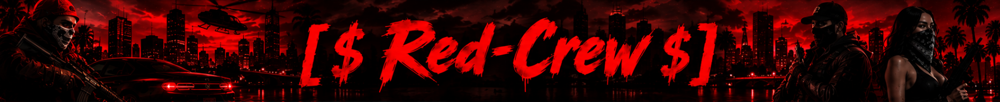
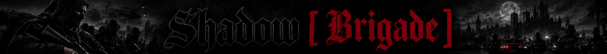
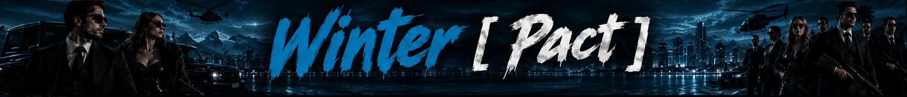

Un nombre que
deja huella.
Cada etapa nos ha enseñado algo. Esta es la historia de las pandillas y mafias que marcaron nuestra trayectoria en Florida.

Red Crew
Pandilla dominante en todos los territorios de Florida. Su determinación, compromiso y esfuerzo llevaron a Red Crew al potencial máximo, llegando así al puesto número 1 como la mejor pandilla de Florida.
North Crew
Pandilla que logró dominar toda Florida con la calidad de sus integrantes, dejando el corazón, el alma y la valentía en cada disputa por el territorio. Con una gran estructura organizada y una buena cadena de mando, North Crew se posicionaba como la pandilla número 1 de toda la ciudad de Florida.

Shadow Brigade
Fue una pandilla llena de integrantes con gran potencial. Se caracterizaban por siempre dejar todo de sí para combatir por la disputa de su territorio, con comunicación, comprensión, determinación y buen trabajo en equipo. Shadow Brigade se convertía así en la mejor pandilla de toda la ciudad de Florida, ganándose el cariño de muchos y el odio de varios al no poder alcanzar su potencial.

Winter [ Pact ]
La primera mafia de toda nuestra trayectoria. Actualmente, Winter [ Pact ] es la mejor mafia de toda Florida, ocupando el puesto número 1 entre las mafias de la ciudad. Winter es querida por muchos y odiada por otros, quienes son llamados "fancitos" o "hijos de Winter", nombres dados por su vigente líder y fundador, Kenneth Outhaklez.